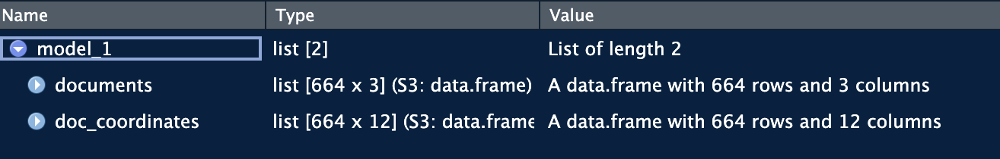
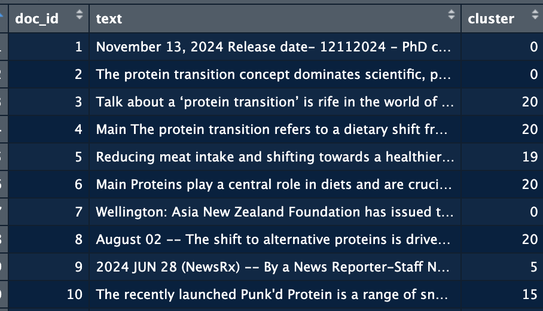
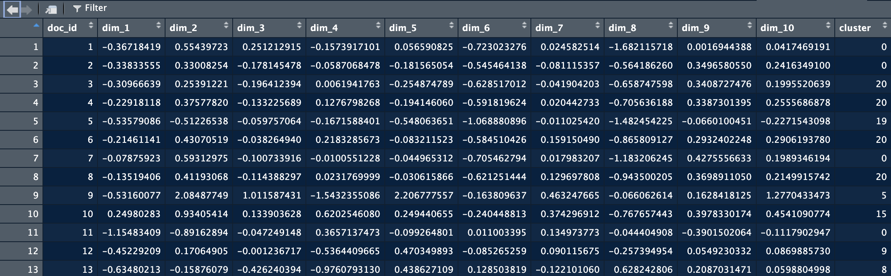
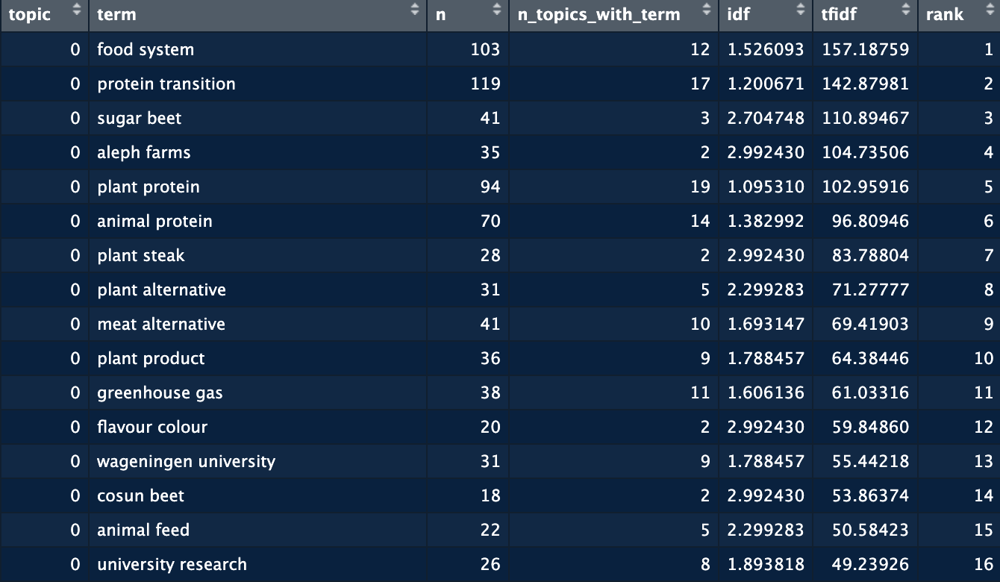
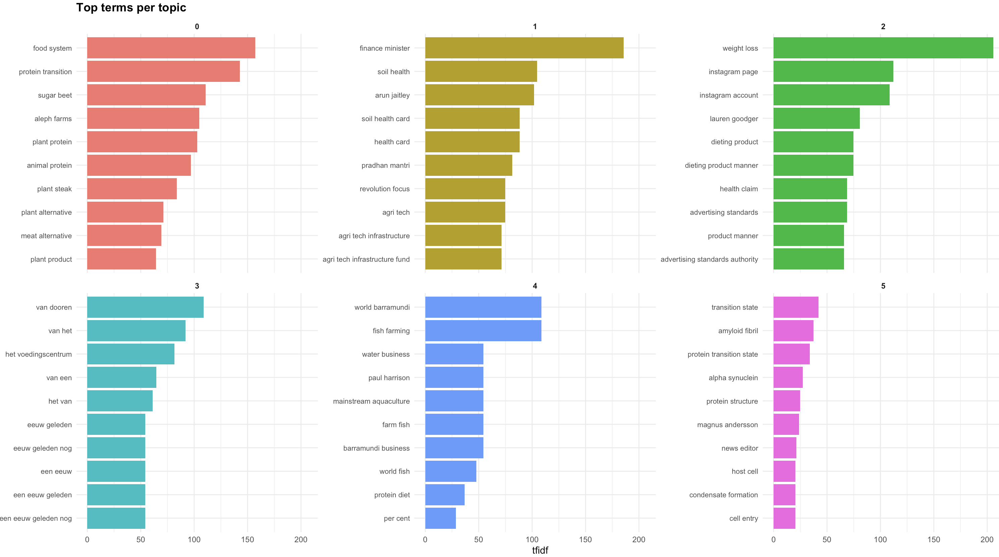
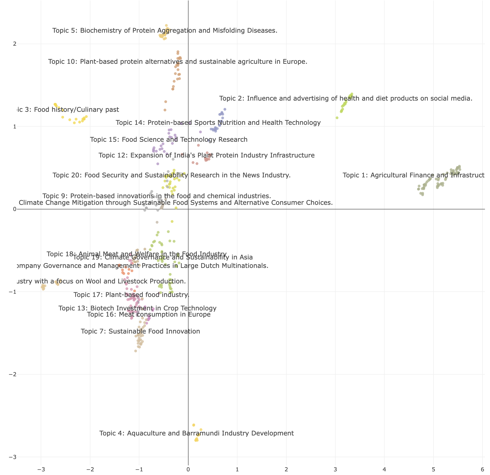
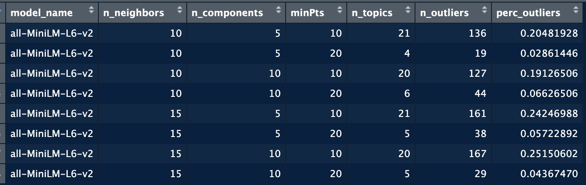

Code
devtools::install_github("JPvdP/NetworkIsLifeR")A practical guide with {bertopicR}
Janpieter van der Pol
February 24, 2026
This package contains many function related to UU data courses including, but not limited to, Topic modelling, data import, visualisations, network and more. We are mainly using it here for the Natural Language Processing functions.
We only do this once! for all R sessions and projects. We run this code and never run it again (unless you get a new computer). This function is like a helpful setup assistant for Python, especially for students just starting to program. Imagine you want to use a special tool (called BERTopic) that needs Python and some extra packages to work. This function makes sure you have everything ready: it checks if Python is installed, and if not, it installs it for you. Then, it creates a special, isolated workspace (called a “virtual environment”) just for your project. This keeps all the tools and packages you need for BERTopic in one place, so they don’t mix with other projects or cause conflicts. If the workspace already exists, the function just leaves it alone. In short, it’s a one-click way to get your Python environment ready for BERTopic, so you can focus on learning and coding without worrying about setup hassles.
We need to tell R that we want to connect to the python environment to use some of the functions. For this we need to activate the environment first. How we do this depends on how python was installed, which in turn depends on the operation system.
By default the name of the enviroment is “bertopic_r_env_spacy” change this argument if you have a different python environment name.
On windows, use:
On Mac, use:
On Brightspace you will find some news articles on the protein transition. We will use those for this first test.
Now that the enviroment is active, we can run a topic model. A topic model takes a certain number of arguments:
| Argument | Type | Default | Description |
|---|---|---|---|
texts |
character vector | — | The input texts on which topic modelling is performed. Each element is a document (e.g. a sentence, abstract, or full text). These are converted into embeddings and then clustered into topics. |
n_neighbors |
integer | 15 | Number of neighbors used by UMAP to learn the local structure of the embedding space. Higher values emphasize global structure and typically yield fewer, larger clusters; lower values emphasize local structure and may produce more, smaller clusters. |
n_components |
integer | 10 | Dimensionality of the UMAP projection. The original high-dimensional embeddings are reduced to n_components dimensions before clustering. Lower values compress the space more strongly, which can make clusters easier to detect for HDBSCAN. |
minPts |
integer | 10 | Minimum number of points required by HDBSCAN to form a cluster. Higher values lead to fewer, more robust clusters; lower values allow smaller clusters but may introduce more noise. |
assign_by_membership |
logical | FALSE | Controls how documents are assigned to topics. If FALSE, the hard HDBSCAN labels are used, including topic -1 for noise (some documents may have no topic). If TRUE, each document is assigned to the topic for which it has the highest membership probability, so every document gets a topic and there is no -1 noise topic. |
model_name |
string | “all-MiniLM-L6-v2” | The embedding model used to embed the text into a semantic space |
The function will return a list with two objects, the first is a dataframe containing the document identifier, the text and the assigned topic. The second object contains the coordinates of the document in the semantic space. When you inspect the list you should see this:

The documents object can be extracted:
And has the following structure:

doc_id allows you to match back to the initial database, the text is there to ensure all is still in the same place, and cluster provides the topic number.
The coordinates of the documents are mainly used to create a visualization of the space. They can however be extracted using:
And have the following structure:

Here you see that we keep doc_id as the reference. Each dim_ column has the coordinate for one dimension in the space. There are as many dimensions as you put in the topic model extraction.
Now we have the topics, but it’s still difficult to make sense out of the information we have. We need some better insights. We do this by applying text mining techniques to the documents in each topic. In other words, we group the document from each topic together and extract the most salient terms to describe the topic.
There is a lot going on in this function. The first arguments are just to specify the columns names.
| Argument | Type | Default | Description |
|---|---|---|---|
pos_keep |
character vector | c("NOUN", "PROPN") |
Parts-of-speech to keep when extracting terms. Typically nouns and proper nouns, because they carry the most semantic meaning in topic representations. |
min_char |
integer | 3 |
Minimum number of characters a token must have to be included. Prevents very short or uninformative terms such as “an”, “of”, “to”. |
min_term_freq |
integer | 1 |
Minimum frequency a term must appear across all documents (within a topic) to be considered. Higher values remove rare terms that may not be representative. |
top_n |
integer | 100 |
Maximum number of terms to keep per topic, ranked by importance (frequency, TF-IDF, or whichever metric is used). |
min_ngram |
integer | 2 |
Minimum length of n-grams to extract. For example, 2 means only bigrams and larger (e.g. “machine learning”). |
max_ngram |
integer | 4 |
Maximum length of n-grams to extract. Setting to 4 allows extraction of bigrams, trigrams, and 4-grams (e.g. “large language model”). |
The output of this function is shown below. For each topic, there are a number of top terms and their associated scored. This dataframe gives you the entire list of terms for all the topics. We can here see that topic 0 relates to food systems, protein transition, sugar beets and aleph farms.

While valuable, still not the easiest way to see the topics. So we now move to visualizing this information. For this we use the plot_topic_terms_grid function. Here you can specify how many topics you want to visualize and how many terms.
This should allow you to get a good idea of the names you could provide to the topics.
Now that we have the topics, let’s have a look at the space. We can visualize the space with the plot_topic_space_interactive() function. This function shows the first two dimensions of the semantic space. We can supply a df with topic labels to make the space more easily readable.

From all the previous steps, you will see that we often need to check different combinations of parameters before we find a space that is well divided. We might also want to test different embedding models. Using the identify_topics_grid function you can test different combinations of parameters and export some variables to see the performance.

Go to Scopus and search for publications on a topic of your interest. If you can’t think of anything use one of the following:
Perform topic modelling on this dataset. Before you do, check the abstract column, you will have to remove rows with missing information, or missing abstracts.
Now run the modeling function to extract the topics. ### Extract the terms per topic Extract the terms, remember to shorten the text if necessary. You might have to remove words and run again.
Create the topic space, interpret the dimensions.
Once you have matched the topics to the publications, you can create a second dataset from the first using the split_scopus_affiliations() function. This function will extract the affiliations and their country.
---
title: "Using BERTopic from R"
subtitle: "A practical guide with {bertopicR}"
author: "Janpieter van der Pol"
date: last-modified
format:
html:
theme: cosmo # or: flatly, litera, journal, etc.
toc: true
toc-location: left
toc-depth: 3
number-sections: true
code-fold: show # fold long code blocks by default
code-tools: true # small copy/download buttons on code blocks
df-print: paged
editor: visual
sidebar: dafs-dst
execute:
echo: true # show R code by default
warning: false # hide warnings in rendered HTML
message: false # hide messages in rendered HTML
---
# Install the package
```{r, eval = F}
devtools::install_github("JPvdP/NetworkIsLifeR")
```
This package contains many function related to UU data courses including, but not limited to, Topic modelling, data import, visualisations, network and more. We are mainly using it here for the Natural Language Processing functions.
# Create a bertopic environment.
We only do this once! for all R sessions and projects. We run this code and never run it again (unless you get a new computer). This function is like a helpful setup assistant for Python, especially for students just starting to program. Imagine you want to use a special tool (called BERTopic) that needs Python and some extra packages to work. This function makes sure you have everything ready: it checks if Python is installed, and if not, it installs it for you. Then, it creates a special, isolated workspace (called a "virtual environment") just for your project. This keeps all the tools and packages you need for BERTopic in one place, so they don’t mix with other projects or cause conflicts. If the workspace already exists, the function just leaves it alone. In short, it’s a one-click way to get your Python environment ready for BERTopic, so you can focus on learning and coding without worrying about setup hassles.
```{r, eval = F}
setup_bertopic_env(
envname = "bertopic_r_env",
python_version = "3.11",
use_conda_on_windows = TRUE
)
```
# Starting with topic modelling
## 1 Activating the enviroment
We need to tell R that we want to connect to the python environment to use some of the functions. For this we need to activate the environment first. How we do this depends on how python was installed, which in turn depends on the operation system.
By default the name of the enviroment is "bertopic_r_env_spacy" change this argument if you have a different python environment name.
On windows, use:
```{r, eval = F}
reticulate::use_condaenv("bertopic_r_env_spacy", required = TRUE)
```
On Mac, use:
```{r, eval = F}
reticulate::use_virtualenv("bertopic_r_env_spacy", required = TRUE)
```
## 2 Load some data
On Brightspace you will find some news articles on the protein transition. We will use those for this first test.
## 3 Now we run bertopic
Now that the enviroment is active, we can run a topic model. A topic model takes a certain number of arguments:
| Argument | Type | Default | Description |
|-----------------|-----------------|-----------------|---------------------|
| `texts` | character vector | — | The input texts on which topic modelling is performed. Each element is a document (e.g. a sentence, abstract, or full text). These are converted into embeddings and then clustered into topics. |
| `n_neighbors` | integer | 15 | Number of neighbors used by UMAP to learn the local structure of the embedding space. Higher values emphasize global structure and typically yield fewer, larger clusters; lower values emphasize local structure and may produce more, smaller clusters. |
| `n_components` | integer | 10 | Dimensionality of the UMAP projection. The original high-dimensional embeddings are reduced to `n_components` dimensions before clustering. Lower values compress the space more strongly, which can make clusters easier to detect for HDBSCAN. |
| `minPts` | integer | 10 | Minimum number of points required by HDBSCAN to form a cluster. Higher values lead to fewer, more robust clusters; lower values allow smaller clusters but may introduce more noise. |
| `assign_by_membership` | logical | FALSE | Controls how documents are assigned to topics. If `FALSE`, the hard HDBSCAN labels are used, including topic `-1` for noise (some documents may have no topic). If `TRUE`, each document is assigned to the topic for which it has the highest membership probability, so every document gets a topic and there is no `-1` noise topic. |
| `model_name` | string | "all-MiniLM-L6-v2" | The embedding model used to embed the text into a semantic space |
```{r, eval = F}
model_1 <- identify_topics_coord(texts,
n_neighbors = 15,
n_components = 10,
minPts=10,
assign_by_membership = FALSE)
```
The function will return a list with two objects, the first is a dataframe containing the document identifier, the text and the assigned topic. The second object contains the coordinates of the document in the semantic space. When you inspect the list you should see this:

The documents object can be extracted:
```{r, eval = F}
topic_assignment <- model_1$documents
```
And has the following structure: 
*doc_id* allows you to match back to the initial database, the text is there to ensure all is still in the same place, and cluster provides the topic number.
The coordinates of the documents are mainly used to create a visualization of the space. They can however be extracted using:
```{r, eval = F}
doc_coordinates <- model_1$doc_coordinates
```
And have the following structure: 
Here you see that we keep doc_id as the reference. Each *dim\_* column has the coordinate for one dimension in the space. There are as many dimensions as you put in the topic model extraction.
## 4. Describe the topics.
Now we have the topics, but it's still difficult to make sense out of the information we have. We need some better insights. We do this by applying text mining techniques to the documents in each topic. In other words, we group the document from each topic together and extract the most salient terms to describe the topic.
```{r, eval = F}
test1 <- compute_topic_tf_idf_spacy_py4( data,
doc_col = "doc_id",
topic_col = "cluster",
text_col = "text",
exclude_topics = NULL,
pos_keep = c("NOUN", "PROPN"),
min_char = 3,
min_term_freq = 1,
top_n = 100,
min_ngram = 2L,
max_ngram = 4L)
```
There is a lot going on in this function. The first arguments are just to specify the columns names.
| Argument | Type | Default | Description |
|-----------------|-----------------|-----------------|----------------------|
| `pos_keep` | character vector | `c("NOUN", "PROPN")` | Parts-of-speech to keep when extracting terms. Typically nouns and proper nouns, because they carry the most semantic meaning in topic representations. |
| `min_char` | integer | `3` | Minimum number of characters a token must have to be included. Prevents very short or uninformative terms such as “an”, “of”, “to”. |
| `min_term_freq` | integer | `1` | Minimum frequency a term must appear across all documents (within a topic) to be considered. Higher values remove rare terms that may not be representative. |
| `top_n` | integer | `100` | Maximum number of terms to keep per topic, ranked by importance (frequency, TF-IDF, or whichever metric is used). |
| `min_ngram` | integer | `2` | Minimum length of n-grams to extract. For example, `2` means only bigrams and larger (e.g. “machine learning”). |
| `max_ngram` | integer | `4` | Maximum length of n-grams to extract. Setting to `4` allows extraction of bigrams, trigrams, and 4-grams (e.g. “large language model”). |
The output of this function is shown below. For each topic, there are a number of top terms and their associated scored. This dataframe gives you the entire list of terms for all the topics. We can here see that topic 0 relates to food systems, protein transition, sugar beets and aleph farms.  While valuable, still not the easiest way to see the topics. So we now move to visualizing this information. For this we use the **plot_topic_terms_grid** function. Here you can specify how many topics you want to visualize and how many terms.
```{r, eval = F}
plot_topic_terms_grid(test1, n_topics = 6, n_terms = 10,)
```

This should allow you to get a good idea of the names you could provide to the topics.
## 5. Visualising the space
Now that we have the topics, let's have a look at the space. We can visualize the space with the **plot_topic_space_interactive()** function. This function shows the first two dimensions of the semantic space. We can supply a df with topic labels to make the space more easily readable.
```{r, eval = F}
plot_topic_space_interactive(doc_coordinates,
topic_labels = topic_labels_plot,
text = topic_assignment$text, # optional vector of full texts for hover
x_col = "dim_1",
y_col = "dim_2",
cluster_col = "cluster",
show_ids = TRUE )
```

# 6. Testing to find the right model
From all the previous steps, you will see that we often need to check different combinations of parameters before we find a space that is well divided. We might also want to test different embedding models. Using the **identify_topics_grid** function you can test different combinations of parameters and export some variables to see the performance.
```{r, eval = F}
test <- identify_topics_grid(Protein_LU_2000_2024$Article,
model_name = "all-MiniLM-L6-v2",
n_neighbors = c(10, 15),
n_components = c(5, 10),
metric = "cosine",
minPts = c(10, 20) )
```

# Exercise: Your turn!
### Get data
Go to Scopus and search for publications on a topic of your interest. If you can't think of anything use one of the following:
- blob, slime mold, amoeboid movement, liquid marbles, non-Newtonian blobs, The Blob (biological organism) • “micromobility”, “bicycle infrastructure”, “smart traffic systems” • “machine learning medical diagnosis”, “AI radiology”, “deep learning MRI” • “serious games education”, “gamification learning”
### Prepare the data
Perform topic modelling on this dataset. Before you do, check the abstract column, you will have to remove rows with missing information, or missing abstracts.
### Run topic modeling
Now run the modeling function to extract the topics. \### Extract the terms per topic Extract the terms, remember to shorten the text if necessary. You might have to remove words and run again.
### Create the topic space
Create the topic space, interpret the dimensions.
### Connect to other variables
Once you have matched the topics to the publications, you can create a second dataset from the first using the *split_scopus_affiliations()* function. This function will extract the affiliations and their country.